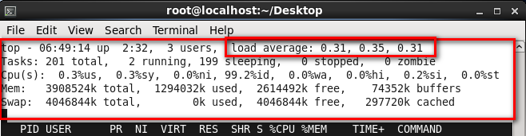
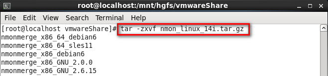
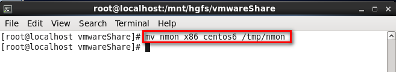
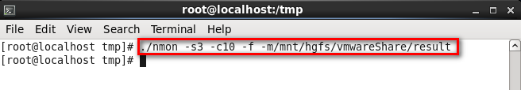
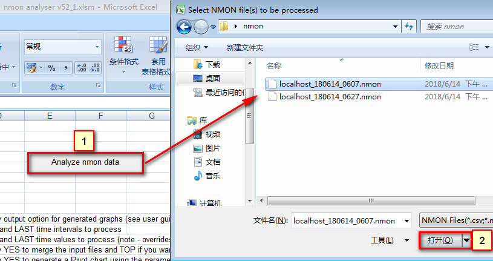

附件2-Linux相关监控
目标
了解Linux系统常用监控命令和工具
Linux资源监控方式
- 命令
- 第三方工具(nmon)
- LR(需要安装RPC相应服务包和开启服务)
一、命令 方式
- top (系统资源管理器)
- vmstat (查看虚拟内存状态)
- free(查看未使用的和已使用的内存数目)
- iostat (查看io磁盘信息)
- sar 网络
1.1 命令 top(系统资源管理器)

- top命令类似与windows的任务管理器，查看内存、CPU、进程等操作信息
- 在Linux系统中常用top命令做资源性能分析工具
核心：
1). 前五行显示系统整体的统计信息；
2). load average 代表负载队列到现在平均长度(三个时间段)，1分钟、5分钟、15分钟 【重点关注】
参数：
1). 第一行 任务列队基本信息 【关注系统负载】
- 06:49:14 ：系统当前时间
- up 2:32 ：系统运行时间 2小时32分钟
- 3 users：当前登录用户数
- load average：系统负载，即任务队列的平均长度-（1分钟、5分钟、15分钟）到现在的平均长度
2). 第二行 进程列队信息 【了解】
- Tasks : 201 total 进程总数
- 2 running 正在运行进程数
- 199 sleeping 睡眠进程数
3). 第三行 CPU信息
- 0.3 %us:用户空间占用CPU百分比
- 0.3 %sy: 内核空间占用CPU百分比
- 99.2%id: 空闲CPU百分比 【关注】
4). 第四行 内存信息
- Mem : 3908524k ktotal 物理内存总量
- 1294032k k used 使用的物理内存总量
- 2614492k k free 空闲内存总量 【关注】
- 74352k k buffers 用作内核缓存的内存量
5). 第五行 交换区内存 【了解】
- Swap : 4046844 k total 交换分区总量
- 0 k used 使用的交换区总量
- 4046844 k free 空闲交换区总量
- 297720 k cached 缓冲的交换区总量
1.2 命令 vmstat(查看内存明细)
1. Procs（进程）
r: 运行队列中进程数量，这个值也可以判断是否需要增加CPU。
2. Memory（内存）
swpd: 使用虚拟内存大小，如果swpd的值不为0，但是SI，SO的值长期为0，这种情况不会影响系统性能。
free: 空闲物理内存大小。
3. Swap
si: 每秒从交换区写到内存的大小，由磁盘调入内存。
so: 每秒写入交换区的内存大小，由内存调入磁盘。
4. IO（现在的Linux版本块的大小为1kb）
bi: 每秒读取的块数
bo: 每秒写入的块数
5. system（系统）
in: 每秒中断数，包括时钟中断。
cs: 每秒上下文切换数。
注意：上面2个值越大，会看到由内核消耗的CPU时间会越大。
6. CPU（以百分比表示）
us：用户进程执行时间百分比(user time)
sy：内核系统进程执行时间百分比(system time)
id: 空闲时间百分比
wa: IO等待时间百分比
1.3 命令 free(查看内存) 【推荐】
显示当前系统未使用的和已使用的内存数目，还可以显示被内核使用的内存缓冲区。
语法：
free [options]
常用：
free -m (-m：以MB为单位显示内存使用情况)
Mem行解释：
total：内存总数；
used：已经使用的内存数；
free：空闲的内存数；
shared：当前已经废弃不用；
buffers Buffer：缓冲内存数；
cached Page：缓存内存数。
(-/+ buffers/cache)解释:
(-buffers/cache) used内存数：第一部分Mem行中的 used – buffers – cached=程序占用内存数
(+buffers/cache) free内存数: 第一部分Mem行中的 free + buffers + cached=可挪用内存数
1.4 命令 iostat(查看io磁盘)
iostat是查看Linux系统io是否存在瓶颈很好用的一个命令
语法：
Usage: iostat [ options ] [ <interval> [ <count> ] ]
options:选项 interval:间隔 count:计数
常用：
iostat -x 1 1
(x:输出列，1：间隔1秒，1：采集1次)
CPU：
1.%user: 在用户级别运行所使用的CPU的百分比
2.%sys: 在系统级别(kernel)运行所使用CPU的百分比
3.%iowait: CPU等待硬件I/O时,所占用CPU百分比
4.%idle: CPU空闲时间的百分比
Device：【重点】
1.tps: 每秒钟发送到的I/O请求数
2.avgqu-sz: 是平均请求队列的长度,毫无疑问，队列长度越短越好
3.await：每一个IO请求的处理的平均时间（单位是毫秒)
4.rkB/s: 每秒读取数据量(单位kb)
5.wkB/s: 每秒写入数据量(单位kb)
6.%util: 磁盘的繁忙程度，如接近100%那说明磁盘已经到瓶颈
1.5 命令 sar (查看网络)
sar命令可以通过参数单独查看系统某个局部的使用情况
语法：
sar [options] [-A] [-o file] t [n]
命令：
sar -n DEV 1 2
(-n：网络设备;DEV:磁盘设备)
1：表示一秒采集一次信息，可自行设定
2: 表示采集的次数，可自行设定
关注指标：
1. rxkB/s: 每秒接收的数据大小，单位kb
2. txkB/s: 每秒发送的数据大小，单位kb
使用场景：
查看当前网络数据包大小，是否存在网络瓶颈
二、工具 nmon
nmon 是分析 AIX 和 Linux 性能的免费工具。（其主要是IBM为自己的AIX操作系统开发的，但是也可以应用在其他Linux操作系统上）
2.1 nmon使用步骤
- 解压文件
- 复制移动对应系统的nmon工具
- 执行工具
- 使用Excel分析工具分析
1. 解压文件

解压：
tar -zxvf nmon_linux_14i.tar.gz
注意:
1.nmon_linux_14i.tar.gz对应的gz包名
2.z:gzip压缩包；x:解压、v：详细信息、f:文件(必须放参数最后,文件前面)
2. 移动/复制文件

1). rm:移动命令 2). /tmp：移动到/tmp临时目录 (建议：直接放到 /usr/local/bin目录下) 3). nmon：移动过去后重名命名为nmon
3. 运行 nmon

./nmon -s3 -c10 -f -m /mnt/hgfs/vmwareShare/result
(3秒钟采集一次，共采集10次，保存到/mnt/hgfs/vmwareShare/result)
1)./nmon：当前目录下执行nmon文件
2). -s：时长-采集数据频率
3). -c：采集次数
4). -f：生成文件名包含文件创建时间
5). -m：指定生成文件保存目录
nmon工具只是采集结果，结果文件为.nmon，不能直接打开使用，需要使用Excel分析工具提取数据
4. Excel分析工具

1). 点击 标1 浏览nmon文件
2). 点击 标2 打开nmon文件(分析完成后会提示保存为excel文件，选取保存路径进行保存)
提示：
1). Excel需要开启宏设置；
2). 如果提示加载文件类型错误，把电脑右下角的星期部分去掉(删除dddd)